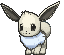

Group 1 (PokeAPI 2D) — where the animations come from
The contact sheet you saw is static base art (one pose per form). PokeAPI's only native animation is the
battle GIF below. The Tamagotchi action states (happy, sad, angry, eating, petting, poop, sleep, evolve) are
not pre-made in official Pokémon art — they're composed from the base art + overlay FX + procedural motion.
The grid below is a live proof-of-concept of exactly that.
A. PokeAPI native animation (battle GIF — 25 frames, Eevee)

showdown/133.gif — idle + battle move (front-facing)

showdown/shiny/133.gif — shiny variant, animated
B. Composed Tamagotchi states (Group 1 proof-of-concept)
Walking
bob + sway + flip per direction
Happy
 💕💗
💕💗bounce + hearts
Sad
💧 droop + tear
Angry
💢 shake + anger mark
Eating
🍖 food + chomp
Petting
✋💕 hand + hearts
Poop
💩 poop appears → clean (A)
Sleep
💤💤 dim + Zzz (night 8pm)
Bottom line: PokeAPI gives you base art + shinies + battle animation. To get all the Tamagotchi actions you either
(1) compose them like the demo above (base art + overlay sprites + CSS/engine motion), or (2) use a source that ships
pre-made action animations — the PMD bonus (walk + attack + emotes), the Eevee × Tamagotchi (eat / sleep / furball / evolve),
or Group 3 (3D) (fully animatable). The overlay FX (hearts, tears, anger, Zzz, food, poop) are tiny standard game sprites
— easy to grab or draw, and PMD ships them for free.